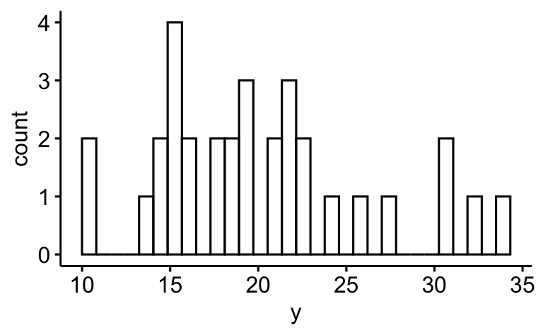
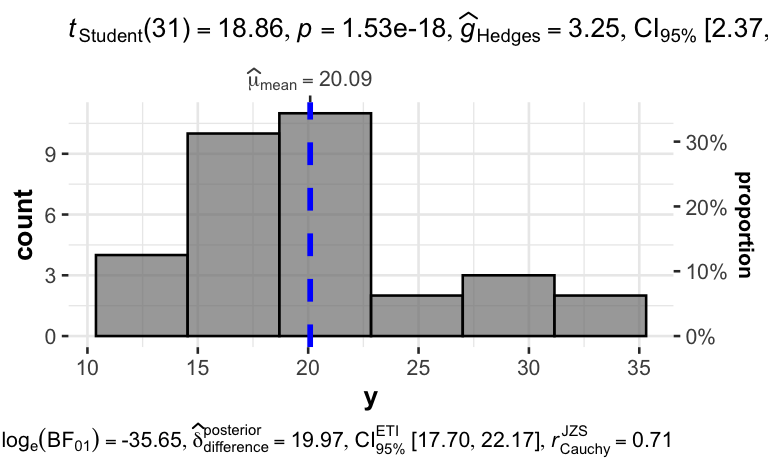
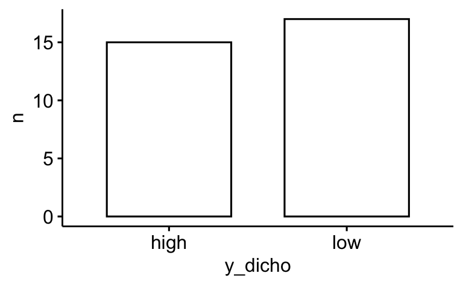

data("mtcars")
d <- mtcars vis-mtcars
vis
yacsda
ggquick
mtcars
string
Aufgabe
In dieser Fallstudie (YACSDA: Yet another Case Study on Data Analysis) untersuchen wir den Datensatz mtcars.
Sie können den Datensatz so beziehen:
Ein Codebook finden Sie hier.
Die Forschungsfrage lautet:
Was ist der Einfluss der Schaltung und der PS-Zahl auf den Spritverbrauch?
- Abhängige Variable (metrisch), y: Spritverbrauch (mpg)
- Unabhängige Variable 1 (nominal), x1: Schaltung (am)
- Unabhängige Variable 2 (metrisch), x2: PS-Zahl (hp)
Visualisieren Sie dazu folgende Aspekte der Forschungsfrage!
Aufgaben
- Visualisieren Sie die Verteilung von y auf zwei verschiedene Arten.
- Fügen Sie relevante Kennzahlen zur letzten Visualisierung hinzu.
- Visualisieren Sie die Verteilung von x1 und x2.
- Visualisieren Sie die Verteilung von y bedingt auf x1.
- Fügen Sie relevante Kennzahlen zur letzten Visualisierung hinzu.
- Visualisieren Sie den Zusammenhang von y und x2.
- Verbessern Sie das letzte Diagramm, so dass es übersichtlicher wird.
- Fügen Sie dem letzten Diagramm relevante Kennzahlen hinzu.
- Fügen Sie dem Diagramm zum Zusammenhang von y und x2 eine Regressionsgerade hinzu.
- Ersetzen Sie die Regressionsgerade durch eine LOESS-Gerade.
- Gruppieren Sie das letzte Diagramm nach x1.
- Dichotomisieren Sie y und zählen Sie die Häufigkeiten. Achtung: Dichotomisieren wird von einigen Statistikern mit Exkommunikation bestraft. Proceed at your own risk.
- Gruppieren Sie das letzte Diagramm nach den Stufen von x1.
- Variieren Sie das letzte Diagramm so, dass Anteile (relative Häufigkeiten) statt absoluter Häufigkeiten gezeigt werden.
Hinweise:
- Orientieren Sie sich im Übrigen an den allgemeinen Hinweisen des Datenwerks.
Lösung
Pakete starten
library(tidyverse)
library(easystats)
library(ggpubr)
library(ggstatsplot)Los geht’s
Umbenennen
Zur einfacheren Verarbeitung nenne ich die Variablen um:
d <-
d |>
rename(y = mpg, x1 = am, x2 = hp)Visualisieren Sie die Verteilung von y auf zwei verschiedene Arten.
Das R-Paket ggpubr erstellt schöne Diagramme (basierend auf ggplot) auf einfache Art. Nehmen wir ein Dichtediagramm; die Variable y soll auf der X-Achse stehen:
ggdensity(d, x = "y")
Beachten Sie, dass die Variable in Anführungsstriche gesetzt werden muss: x = "y".
Oder ein Histogramm:
gghistogram(d, x = "y")
Fügen Sie relevante Kennzahlen zur letzten Visualisierung hinzu.
Um Diagramme mit Statistiken anzureichen, bietet sich das Paket ggstatsplot an:
gghistostats(d, x = y)
Beachten Sie, dass die Variable nicht in Anführungsstriche gesetzt werden darf: x = y.
Visualisieren Sie die Verteilung von x1 und x2.
x1
d_counted <-
d |>
count(x1) ggbarplot(data = d_counted, y = "n", x = "x1", label = TRUE)x2
gghistostats(d, x = x2)Visualisieren Sie die Verteilung von y bedingt auf x1
gghistogram(d, x = "y", fill = "x1")Oder so:
gghistogram(d, x = "y", facet.by = "x1")
Fügen Sie relevante Kennzahlen zur letzten Visualisierung hinzu
grouped_gghistostats(d, x = y, grouping.var = x1)Visualisieren Sie den Zusammenhang von y und x2
ggscatter(d, x = "x2", y = "y")Verbessern Sie das letzte Diagramm, so dass es übersichtlicher wird
Es gibt mehrere Wege, das Diagramm übersichtlicher zu machen. Logarithmieren ist ein Weg.
d |>
mutate(x2 = log(x2)) |>
ggscatter(x = "x2", y = "y")
Synonym könnten wir schreiben:
d_logged <-
d |>
mutate(x2 = log(x2))
ggscatter(d_logged, x = "x2", y = "y")Fügen Sie dem letzten Diagramm relevante Kennzahlen hinzu
ggscatterstats(d_logged, x = x2, y = y)Fügen Sie dem Diagramm zum Zusammenhang von y und x2 eine Regressionsgerade hinzu
ggscatter(d_logged, x = "x2", y = "y", add = "reg.line",
add.params = list(color = "blue"))Ersetzen Sie die Regressionsgerade durch eine LOESS-Gerade
ggscatter(d_logged, x = "x2", y = "y", add = "loess",
add.params = list(color = "blue"))Gruppieren Sie das letzte Diagramm nach x1
ggscatter(d_logged, x = "x2", y = "y", add = "loess",
add.params = list(color = "blue"),
facet.by = "x1")
Dichotomisieren Sie y und zählen Sie die Häufigkeiten
Nehmen wir einen Mediansplit, um zu dichotomisieren.
d <-
d |>
mutate(y_dicho = ifelse(y > median(y), "high", "low"))d |>
count(y_dicho) |>
ggbarplot(x = "y_dicho", y = "n")
Gleich viele! Das sollte nicht verwundern.
Gruppieren Sie das letzte Diagramm nach den Stufen von x1
d_count <-
d |>
count(y_dicho, x1)
d_count| y_dicho | x1 | n |
|---|---|---|
| high | 0 | 4 |
| high | 1 | 11 |
| low | 0 | 15 |
| low | 1 | 2 |
ggbarplot(d_count, x = "y_dicho", y = "n", facet.by = "x1")Variieren Sie das letzte Diagramm so, dass Anteile (relative Häufigkeiten) statt absoluter Häufigkeiten gezeigt werden
d_count <-
d_count |>
mutate(prop = n / sum(n)) |>
mutate(prop = round(prop, 2))
d_count| y_dicho | x1 | n | prop |
|---|---|---|---|
| high | 0 | 4 | 0.12 |
| high | 1 | 11 | 0.34 |
| low | 0 | 15 | 0.47 |
| low | 1 | 2 | 0.06 |
Check:
d_count |>
summarise(sum(prop))| sum(prop) |
|---|
| 0.99 |
Gut! Die Anteile summieren sich zu ca. 1 (100 Prozent).
ggbarplot(d_count, x = "y_dicho", y = "prop", facet.by = "x1", label = TRUE)
Man beachten, dass sich die Anteile auf das “Gesamt-N” beziehen.
Categories:
- vis
- yacsda
- ggquick
- mtcars
- string